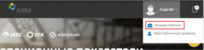
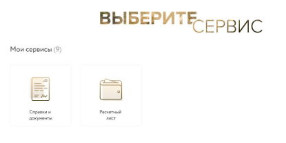
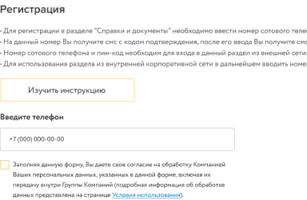
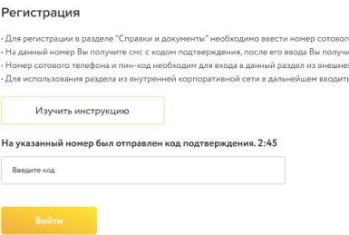

Инструкция по регистрации на корпоративном портале
- Зайдите в Личный кабинет на корпоративном портале https://intranet.aimholding.ru/
-
В разделе «Рабочие сервисы» на вкладке «Мои сервисы» выберите «Справки и документы» или «Расчетные листы»,
после чего будет выполнен автоматический переход на страницу регистрации пользователей в Личном кабинете
- Чтобы пройти регистрацию в Личном кабинете необходимо ввести номер мобильного телефона. (В дальнейшем на указанный номер телефона будут приходить уведомления от ЛК о готовности документов и других услугах).А также необходимо подтвердить своё согласие на обработку персональных данных и нажать кнопку «зарегистрироваться»
-
В течение 30 сек. на указанный номер телефона придет смс с четырехзначным проверочным кодом,
который необходимо ввести в строку «код подтверждения» и нажать кнопку «войти»
-
После этого на указанный вами номер телефона с адреса SUEK будет направлено смс уведомление с «пин–кодом», который необходимо сохранить.
«Пин-код» потребуется в дальнейшем для прохождения авторизации в случае работы с сервисами Личного кабинета из внешней сети.
-
Система автоматически выполнит переход на страницу сервиса,
который был выбран вами при регистрации для дальнейшей работы с ним